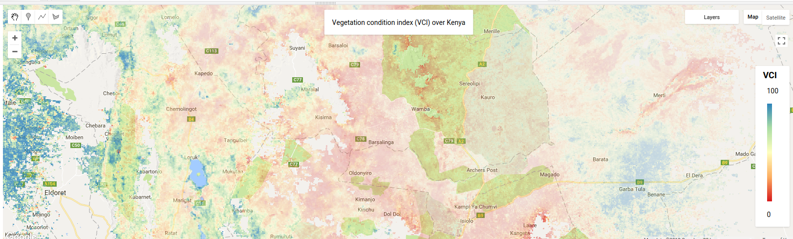
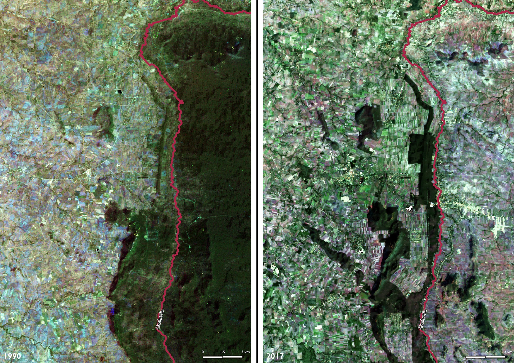

Recent Posts
Short tutorials, news and how-to’s

Introduction to Google Earth Engine
In a previous post, I gave a brief introduction how to use google cloud compute to kickstart your cloud computing experience. While it is possible to run large spatial operations on google cloud compute, it is quite time-consuming to set up all the routines to load and process geospatial data. Luckily there is now a new platform (currently in beta-testing) called Google Earth Engine (GEE) described as planetary scale platform for spatial analyses.

PhD research image prize
I won a prize :-) In this years Festival of Doctoral research at the University of Sussex I won the runner-up prize for the best image describing one’s doctoral research. The task was to submit a single image and 300 word abstract that visualizes and describes the goals of a persons doctoral research.
Picture seen above (click here for larger version). Here is the accompanying description:
Title: Going back in time with satellites to assist biodiversity conservation In my PhD I investigate how past land changes continue to affect local biodiversity.
Data science in the Google cloud - [1]
Anyone analysing big data (buzzword, here refereed to as data too big to load into memory) soon will come to the realization that processing such data requires a lot of computational resources. During my PhD I mainly worked with the local high-performance-computer (HPC) at the University of Sussex. A couple of years into my PhD and I increasingly realized that our little HPC suffers from the tragedy of the commons with more and more people requesting computation time on a few available nodes.

Robust correlations with xarray and dask
I perform most of my analyses using either R or standalone GDAL tools simply because of their general convenience and ease of use. Standard spatial analysis functions and tools are in my opinion still more readily available in R and most R packages are quite mature and well designed ( but see the readme ). Nevertheless python has caught up and a number of really helpful python modules for spatial analyses have been released to this date.
New professional website
Welcome to my new starting website. My name is Martin Jung and I consider myself an Environmental and data scientist. Read here for more.
I have abandoned my previous online presence, the Conservation ecology blog since quite a while. Mostly because I was too preoccupied working on my PhD. However I also disliked the inflexibility of wordpress layouts and the added advertising below each wordpress.com article. Therefore the restart of my professional website powered by hugo and the academic theme.